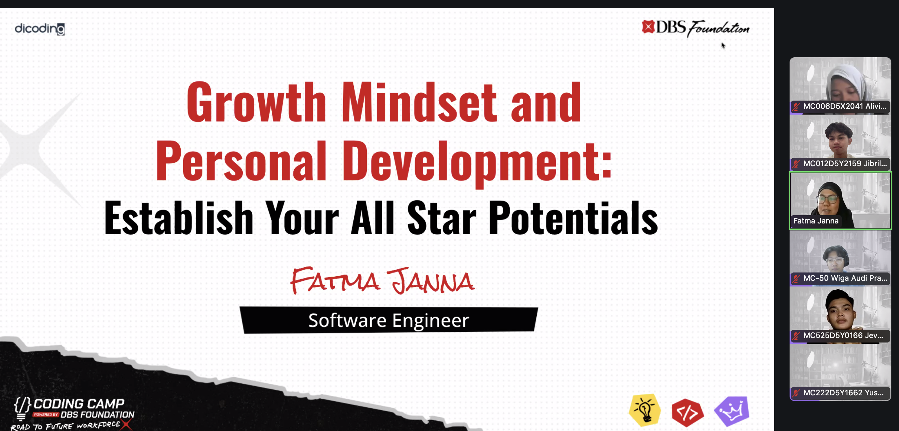

Photo caption: One of self-improvement classes from the cohort.
[WRITER'S NOTE] In early to mid 2025 (January-July) i took part in a six-month intensive learning program run by DBS Foundation and Dicoding, focused on machine learning and data analysis called Coding Camp. This was one of the program that acts as a replacement for Bangkit Academy by GoTo, since me and most people didn't get the chance to even enroll Bangkit on that year before it got changed.
Throughout this journey, i built three or more complete machine learning projects, covering the whole process: cleaning data, exploring it (EDA), training models, and checking the results. I was taught how to process data from preprocessing, extracting insights, all the way to business presentation based on the said data.
Other than that, participants of Coding Camp also get full access to all of Dicoding classes based on the chosen cohort, which in my part: Machine Learning and Data Analysis. By the end of this program, each participant must complete all of the classes within the cohort and work with the frontend team to build final capstone project.